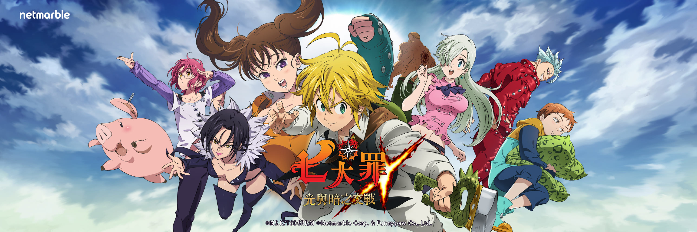

介紹

本作是利用高品質的 3D 建模引出人氣動畫《七大罪》原作魅力的遊戲作品。除了採用技能卡片（スキルカード）的遊戲系統能夠體驗深奧戰略的戰鬥內容。遊戲劇情完整收錄了原作動畫《七大罪》第 1 期的内容，可以見到原作中各個經典場面以高品質 3D 建模的形式在遊戲重現。另外隨著版本更新將會逐步實裝新系列與原創的劇情內容。
本作的戰鬥以回合制進行，將畫面下方顯示的技能卡片進行排列後來打倒敵人。根據所選擇的技能卡片會發動相對應的技能，如果將相同技能卡片放在隔壁的話，便會升格成更上位等級的卡片，使出更強力的技能。
遊戲故事背景
在「布里塔尼亞」大陸上的「里歐涅絲王國」，聖騎士們為了準備傳說中的聖戰而進行軍備強化，諸多暴行使得民不聊生，他們甚至發動政變囚禁了國王。擔憂國家的第三王女伊麗莎白·里歐涅絲，將救國的希望寄託於十年前因涉嫌顛覆王國而被通緝的騎士團「七大罪」，並獨自踏上尋找他們的旅程。 在註定無果的旅程中，疲憊不堪的伊麗莎白誤入某間酒館，被酒館的主人、一名金髮少年救下，這名少年正是「七大罪」的團長－－人稱「憤怒之罪 Dragon's Sin 」的梅里奧達斯。在將公主從追兵的危機中解救出來後，他們踏上了拯救國家未來的旅途……。
wiki

歡迎來到七大罪-光與暗之交戰攻略wiki，這是由玩家進行製作的七大罪-光與暗之交戰專屬遊戲資料庫、內含功能介紹、遊戲圖鑑、精品攻略以及遊戲公告等。
wiki網址:
http://7dz.gamekee.com/
參考網址
wiki : MORE
遊戲故事背景 :MORE
介紹 : MORE